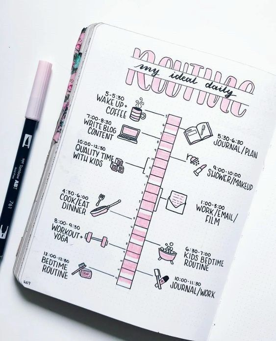
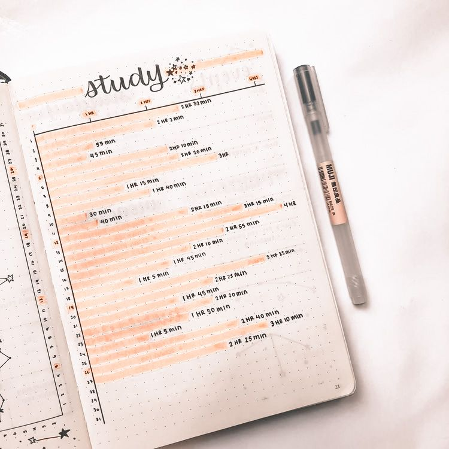

Maintaining Habits and Routines through Self-Care
Hello there! I’m Chelsea, also known as Line Unfolding. I love helping folks find habits and routines that help us not only be productive but care for ourselves along the way. The Bullet Journal system has been a transformative way for me personally to stick with habits and maintain a routine, and I am so excited to share some of the techniques and philosophies I use in my planning system that have helped me along the way!
Before we dive into trackers in our Bullet Journal, let’s zoom out. Too often, we can get caught up in tracking a million little things, from water intake to hours of sleep, and the process turns into something that feels weighty and full of pressure. If this is you, you aren’t alone! We’re so used to habits, new year’s resolutions, and other self-betterment techniques that feel punishing and use negative thinking as a way of finding motivation. I don’t know about you, but the habits I tried to work on because I felt I “had to” do them never stuck; instead they felt forced.

But the spirit of Bullet Journaling, where we’re about progress over perfection, has been a great way to help me rethink my habits, and I hope it can help you too. Being more reflective, gentle, and positive can make all the difference in keeping up with habits and building routine—here are some of my favorite tools and techniques to infuse that spirit into your own process and Bullet Journal.
Not just what, but why
Don’t just track something for the sake of it: first, figure out why you want to do it. This is key, because the reason you’re tracking something might help you figure out why you do or don’t stick with it.
For example, for years I would see beautiful reading trackers on Instagram. I’d set up spreads in my Bullet Journal, spend some time on Goodreads… and then a month later realized that three or four books later, I’d never tracked any ratings, dates, or page totals. When I finally asked myself why I kept trying and failing, I realized I was ultimately just doing it “for the ’gram”, not because it benefited me. Just because it was a spread everyone else seemed to use didn’t mean it was going to work for me.
On the flip side, it’s been no problem for me to stick to a sleep/mood tracker. I love noting down how much I’ve slept. And why did this one work? For me, it was actually helpful to reflect on, and something I found myself naturally making time for—was my mood related to sleep that day? Why was this week so difficult and was it related to the amount of rest I was getting, or my mental state? Plus, it was a daily tracker, so it was easier for me to stick to than something monthly.
Journaling is a great way to explore this question. Here are some prompts to try:
- For each habit you’re tracking or want to track, ask: why do I want to do this? Is it driven by a positive purpose, or a negative mindset? Can I reframe the habit?
- Brain dump of habits, hopes, goals, and dreams you want to tackle.
- Take a look at the brain dump. What is measurable already? If something doesn’t feel measurable, can you make it measurable?
- What’s the time frame for your habits—is it something you need to do daily, weekly, monthly?
Sorting through the above will help you figure out what you actually want or need to track, as well as the way you might track it that will actually help you stick with it.
What motivates you?
Journaling can tell you a lot about your motivation, but so can personality tests, which are one of my favorite tools for productivity!
One test that’s given me some great language for habits is Gretchen Rubin’s The Four Tendencies (2017). It’s all about expectations and drive: she says we are driven by outer expectations (what others expect from us) and inner expectations (what we expect from ourselves), and we either naturally meet an expectation type or we are inclined to resist it.
You can take a great personality test on her site to see which of the four different types you are. For example, I’m a Questioner, which means I’m driven by inner expectations and resist outer expectations. For motivation, this means I personally need to do a lot of research and inquiry on my own to make sure the time and process is worth it, but then I’m good to go. For others, like Obligers, who resist inner expectations but are driven by the expectations of others, my process wouldn’t help; instead, they might need an accountability buddy to stick with something.
From habit to routine
The key to sticking with a habit is working it into a routine you love.
My sleep and mood tracker, above, is a great example. Aside from being useful from a reflective standpoint, I’ve worked it into my routine. Every morning, I stay in my PJ’s for a bit and have some cozy journaling time with coffee. Part of my journaling routine is updating my trackers and time blocking the previous day. Because it’s part of my existing, beloved routine, it’s no trouble to work it in, and in fact helps me start the day on a reflective note. I know from experience this mindset is wonderful for my mental health, so it ticks a lot of boxes in terms of making it something positive.
Making a routine work for you
If you’re having trouble creating a routine or sticking with it, here are some ideas that might help.

- Make it something you look forward to—even if it feels indulgent. If you love being in your PJ’s and drinking coffee like me, work that in without guilt! If being outside is something you love, or the ambience of a coffee shop, make that part of your routine, even if it feels silly. It’s not unnecessary if it helps you be productive and care for yourself.
- Set up a special physical space for the routine. My desk is my haven, and I love making it cozy and minimal. Maybe you need a nest of pillows on your couch to do your journaling routine, or perhaps natural light will help you want to do your weekly yoga practice? Set aside time to make your space one you actually want to use.
- Give it a try for a little longer than you think you need to. It takes time for our brains to learn to stick with a habit/routine. If you know you want to do something but it’s not coming naturally, you could try the Pomodoro focus technique, rewarding yourself (go outside, have a cookie after completing a habit), or even gamifying it (Habitica and Forest are fun apps). If you still can’t stick with it after a week or two, maybe it’s time to adjust the habit/routine itself, or let it go.
-
Be kind to yourself
Remember that this process is ultimately for you, and no one else. Be kind to yourself as you try a new habit or routine. If it’s not working, that’s okay! Try to adjust, or maybe the habit or routine isn’t serving you and you need to let it go. You can always try it again later.
One of my treasured routines/habits is daily journaling. I change the way I journal all the time: from morning pages, guided printed journals, my own journal prompts, to just plain free-writing. If I notice I’m feeling “blah” about my journal, I switch it up from the above options to keep up with the routine, because I have found over time that the routine itself help, no matter what specific way I’m doing it. I don’t allow myself to feel bad about doing something a little differently, because that negative mindset doesn’t help me with a routine that’s supposed to be supporting me! Instead, I reflect, think creatively and try something new, or I let it go with no regrets.
Do you have any additional tips or ideas that have helped you in your own habits and routines? I’d love to know in the comments! In the meantime, I hope this gave you some inspiration—not only from a productivity standpoint, but also in taking care of yourself as we get things done, too.
About the Author
Line Unfolding, also known as Chelsea, is a creative planner and Bullet Journaler with a passion for productivity, creativity, and reflection. She’s also a full-time art educator in New York City.